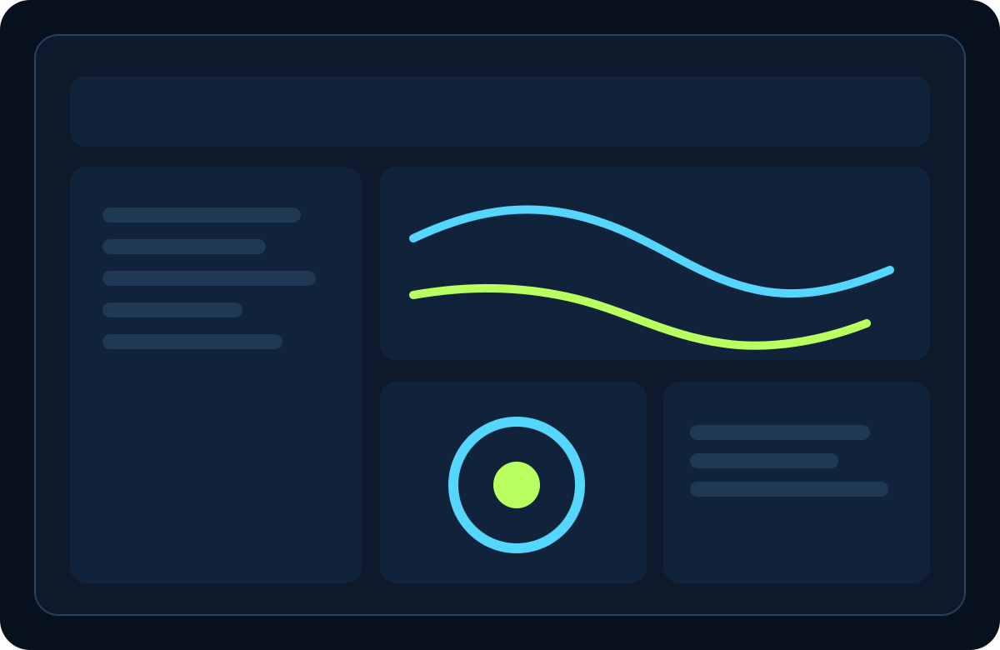
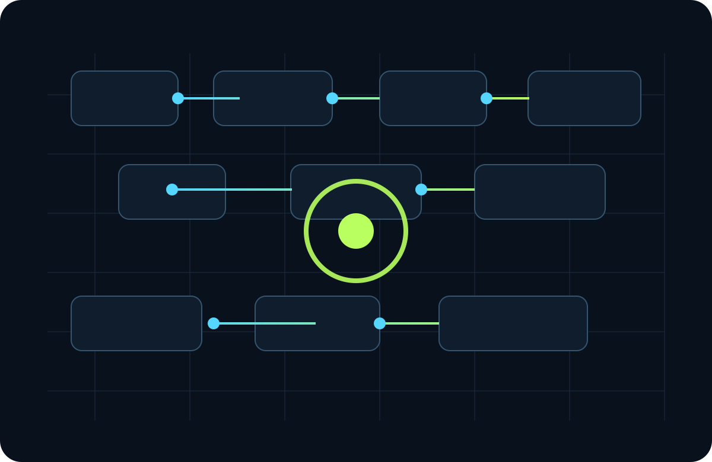
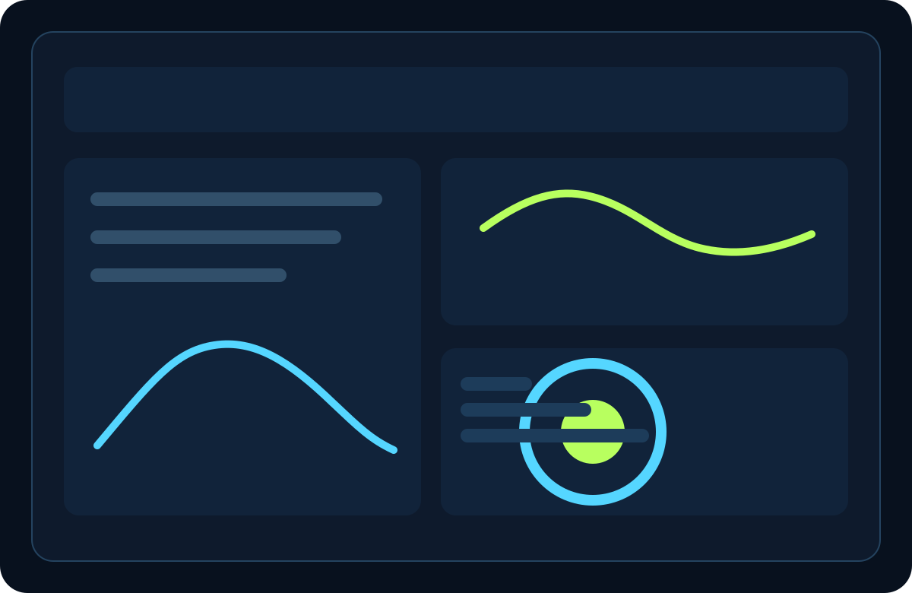
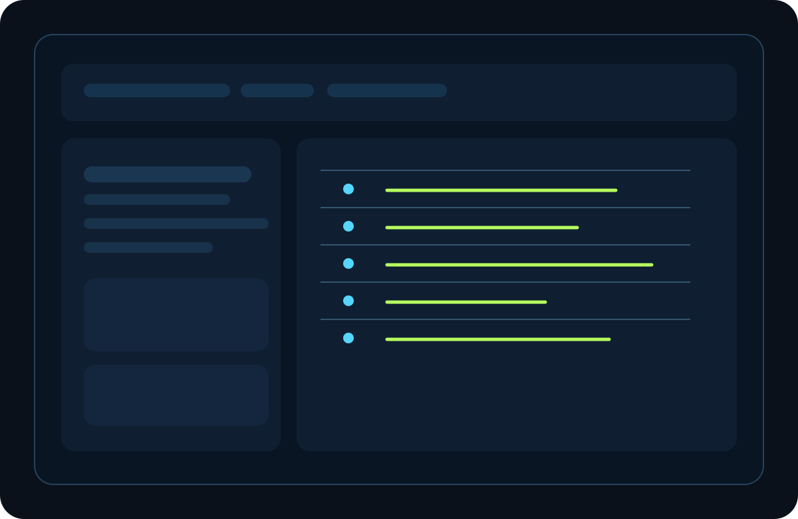
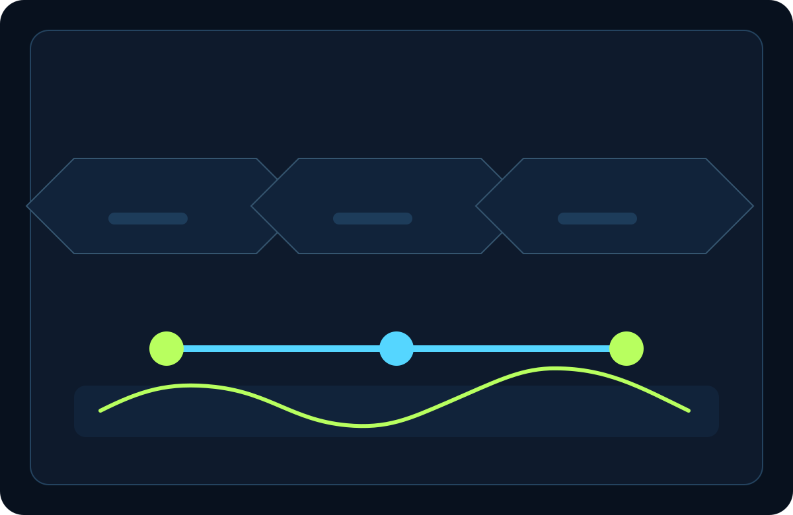
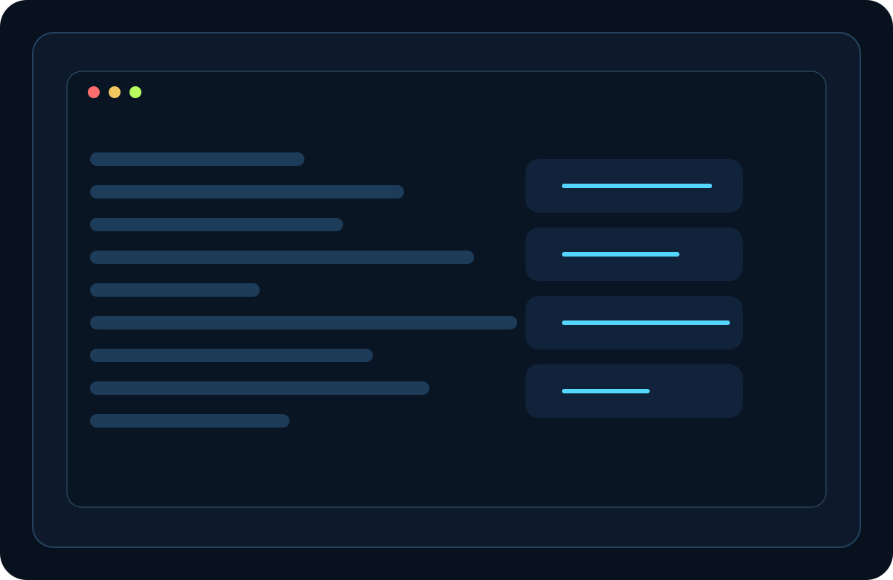
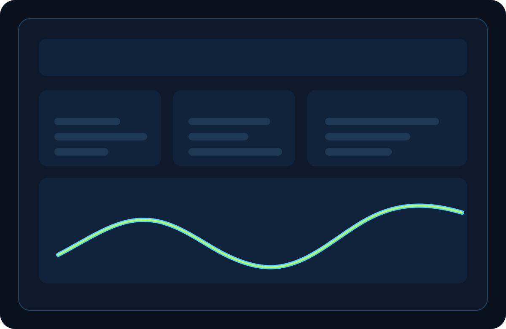
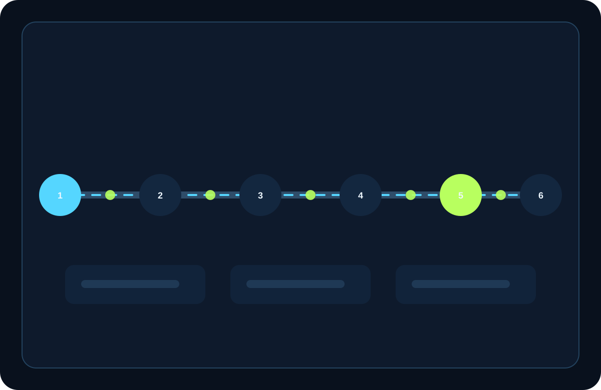
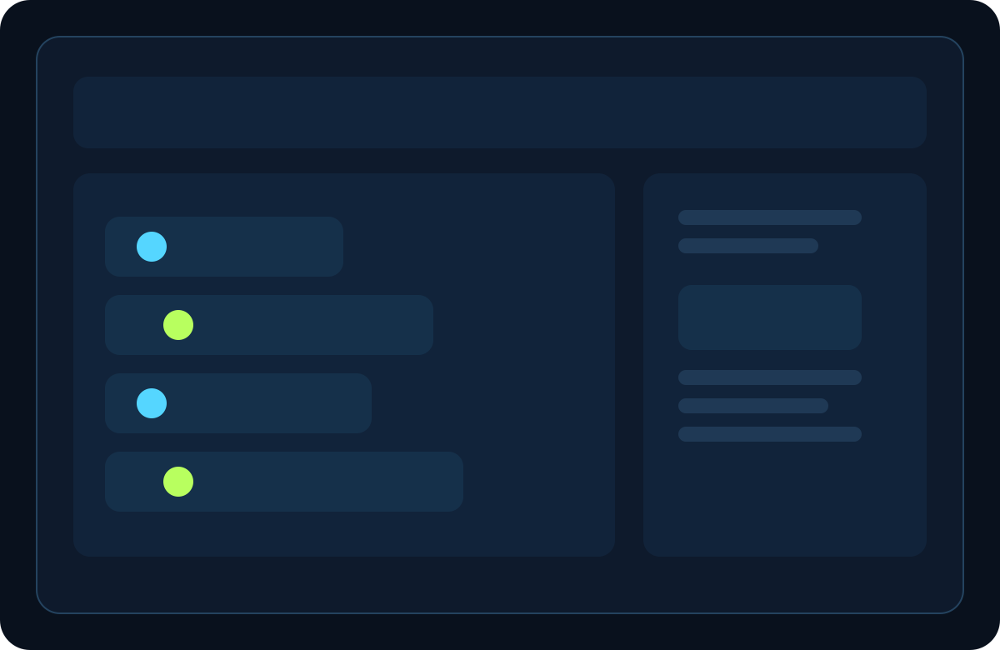
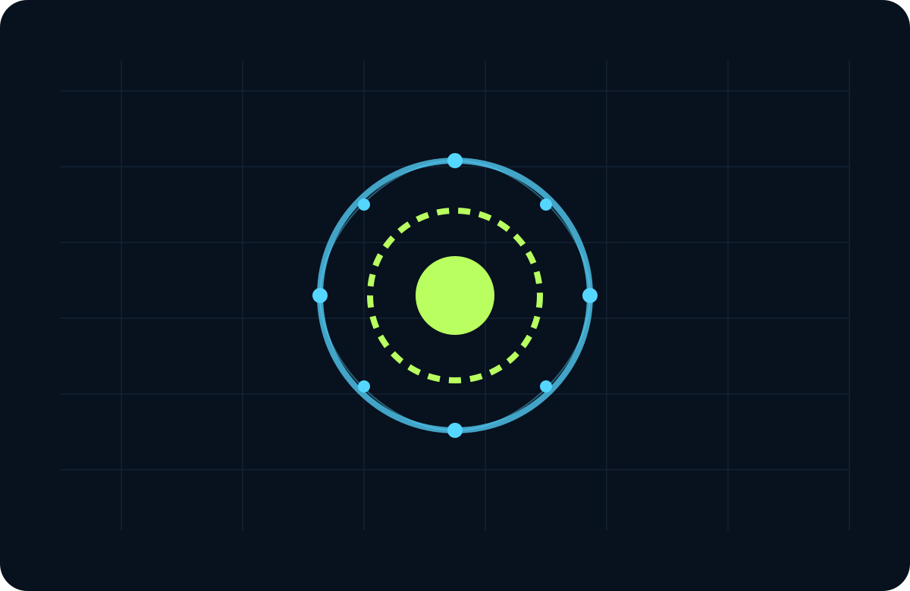

Automation Readiness Checklist
A practical way to see which processes are ready for automation and which still need cleanup.
Read moreAstraGrid Systems
We design AI automation, reporting systems, dashboards, and internal tools that replace manual rework with calm, measurable flow for small businesses and operations teams.

Average reduction in repetitive routing and follow-up work.
Typical first release for a workflow or dashboard system.
Reusable automations, checks, and reports for the operations team.
Problem
AstraGrid finds the spreadsheet detours, repeated decisions, missing data contracts, and hidden queues that keep solid teams reactive.
See where requests stall, where approvals bounce, and where work keeps returning to the same people.
Repair broken source records so dashboards, automations, and weekly reporting stop drifting.

Services
Each engagement is scoped around a single operational outcome: fewer handoffs, cleaner data, or a dashboard the team trusts.
AI Workflow Automation
Route requests, approvals, reminders, and exceptions into one visible system.
Service detail
Custom Dashboards
Give leaders the right numbers with clean hierarchy and trustworthy sources.
Service detail
Internal Tools
Build compact apps for intake, QA, handoffs, and tracking.
Service detail
CRM & Data Cleanup
Repair duplicate records, stale fields, and broken lifecycle stages.
Service detail
WordPress Integrations
Connect the website to the systems your team already uses.
Service detail
Reporting Systems
Automate weekly reporting so the story stays stable every cycle.
Service detailAutomation flow
The first release is built to show the routing, the exceptions, and the reporting path in one system map.
We chart the real process, including workarounds and broken handoffs.
Duplicate records, stale stages, and missing fields get repaired before automation.
Notifications, approvals, and human checks become visible, testable steps.
The output becomes a dashboard and weekly summary the team actually uses.
Process
Every project moves through discovery, build, validation, handoff, and a short stabilisation window.
We start with a process map, source list, and the exceptions that matter most.
Each release gets tested against the actual users, data, and handoff rules.
The team receives documentation, naming rules, and a maintenance plan.
Small follow-up releases keep the system aligned with the weekly cadence.

Featured work
The filtering view keeps the work legible by category and reveals how different systems support the same operations team.
A dispatcher workflow that reduced follow-up time by 63% across support, billing, and onboarding.
A cleanup pass that merged duplicate customers, aligned stages, and stabilized weekly reports.
A warehouse dashboard with live counts, issue flags, and concise shift summaries.

A form-to-ticket bridge that routed jobs, notes, and images into the team queue.
A routing layer that turned exceptions into review items rather than hidden dead ends.
An executive view that tracks revenue, response time, backlog, and churn in one place.
Style pillars
Layered panels, gridlines, and controlled glow make the interface feel technical, premium, and easy to scan.
Sections connect like a live system map, with clear nodes, routes, and panels.

A subtle orbital backdrop gives the page motion without making it feel busy.
Every panel holds contrast, rhythm, and a tight type scale for quick reviews.
Micro accents highlight what matters: thresholds, exceptions, and movement.
Proof
These proof points are built into a single tabbed panel so the page stays compact while still feeling substantial.
Typical outcome
Teams stop re-entering the same information across forms, tools, and weekly reporting.
Typical outcome
Leaders can see stuck work, aging queues, and the metrics that need attention.
Typical outcome
Operations meetings become shorter because the system already explains what changed.
Blog / resources
These articles and guides are written for operators, founders, and managers who need practical guidance they can use this week.
Resource
A practical way to see which processes are ready for automation and which still need cleanup.
Resource
A decision-first approach to metrics, filters, drill-downs, and reliable executive reporting.
Resource
Where chat assistants help operations, and where a proper workflow still needs a human.
Resource
Why cleanup is the fastest route to trustworthy numbers and less weekly debate.
FAQ
AstraGrid keeps the early conversation grounded in process, data, and support.
We pick the path that repeats most often, creates the most follow-up, or breaks the dashboard the hardest.
Yes. We usually repair the source records and field logic before suggesting a rebuild.
That is the goal. Every launch includes notes, owner names, and a maintenance path the operations team can follow.
Yes. We connect sites to intake, reporting, and back-office systems without introducing CDN dependencies or remote scripts.